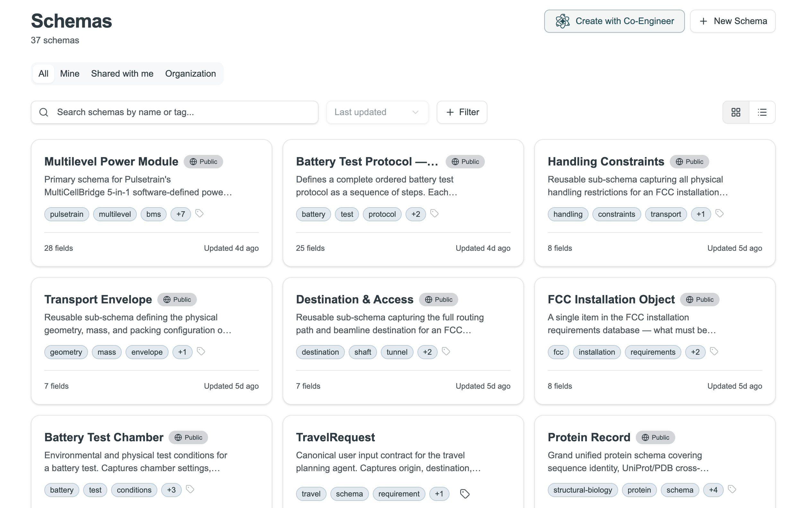
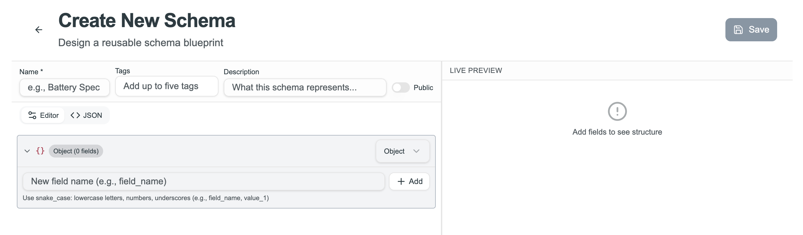
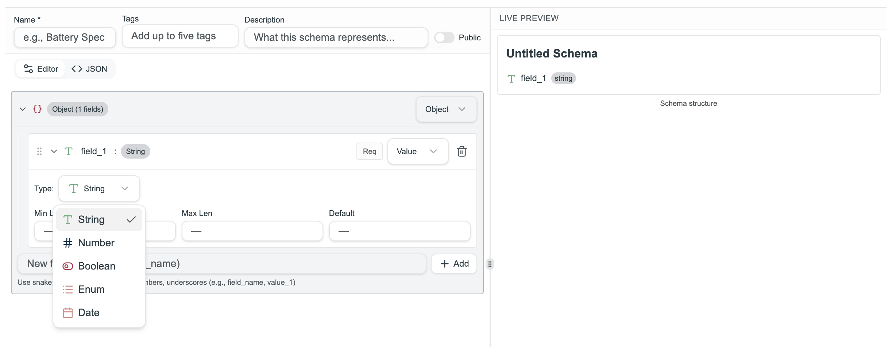
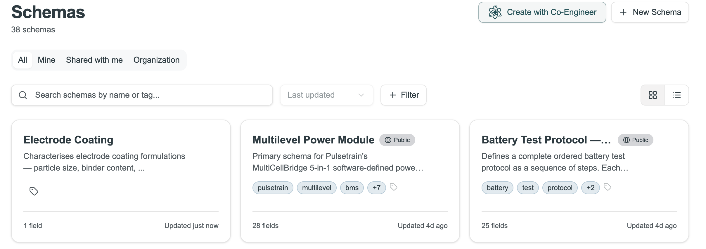

Tutorial: Creating Your First Schema
This tutorial walks you through building a schema from scratch, explains the decisions you'll make along the way, and shows you what to watch out for. Takes about 5 minutes.
You can also ask the Co-engineer to do this for you. Open the Co-engineer and say "Create a schema for electrode coating experiments with fields for coating thickness, porosity, active material, and mass loading." It will build the schema, choose the right types, and set the units — you just review and confirm. Skip to Tutorial: Working with the Co-engineer if you'd rather start there.
Step 1 — Open the Schema Editor
Click Schemas in the sidebar. You'll see any existing schemas as cards. Each card shows the schema name, tags, field count, description, and last-updated date.

Click + New Schema in the top right.
Step 2 — Give it a name
The schema editor opens. Name it using the domain + artifact convention: Battery — Electrode Coating, Pharma — Tablet Formulation, Thermal — Operating Conditions.
This naming makes schemas easy to find as your project grows — anyone can search by domain or type.

Keep it lean. Only add fields that will actually be populated. A schema with 5 well-filled fields is far more useful than one with 20 fields that half the team leaves empty. Empty fields break comparisons and make documents harder to read.
Step 3 — Add your fields
Type a field name in the bottom input and click + Add. The field appears in the list and you set its type.
Each field has a Kind selector (Object, Array, Union, Value, or Ref). For Value nodes, a Type picker then lets you choose string, number, boolean, enum, or date.

For a full description of each type and when to use it, see Schemas → Field Types. The key decision in practice: use Enum instead of String whenever values come from a fixed set — it prevents typos and makes filtering reliable.
Field names must be snake_case (lowercase letters, numbers, and underscores — e.g. field_name, value_1). The editor will show a validation error for invalid names.
Click the Req toggle on a field to mark it required only if the document is meaningless without it. A missing coating_thickness on an electrode coating record makes it useless for comparison. A missing batch_notes doesn't.
Step 4 — Save
The schema editor has a JSON tab that lets you edit the raw schema definition directly, alongside the visual Editor tab.
When editing an existing schema, the name, tags, and description panel is collapsed by default — click Edit in the header to reveal it.
Click Save. The schema appears in the library as a card.

The schema is now available across your project. Go to the Data Studio to create your first data document from it.
What to avoid
- Don't add fields you won't fill consistently. Sparse data breaks comparisons.
- Don't rename or remove fields once data documents exist against this schema. This can corrupt existing documents. Add a new schema version instead.
- Standardise units before you create numeric fields. Changing units later requires migrating all existing documents.
Next step
→ Tutorial: Using the Data Studio — create documents from this schema and compare them side by side.